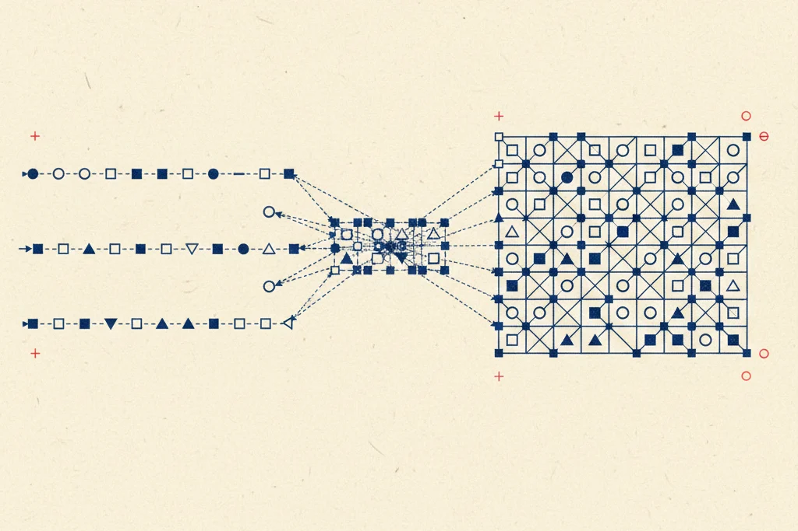

Università di Bologna · Prof. Alessandro Ricci · a.a. 2025/2026
Programmazione Concorrente e Distribuita
19 capitoli4 pagine di prep esame~6 ore di lettura

Tavola 00 — Tracce indipendenti → interleaving → ordine. Il percorso del corso in una figura.
Come studiare
I capitoli seguono l'ordine del corso e dei moduli delle slide. Ogni capitolo raccoglie in un unico posto ciò che le lezioni hanno detto su un argomento, spiegato una volta sola, e si apre con il capitolo in un paragrafo.
L'orale è una discussione individuale sugli assignment più i concetti del corso. Alla fine di ogni parte c'è una pagina di prep esame sull'assignment corrispondente.
I laboratori interattivi calcolano davvero qualcosa (interleaving, stati raggiungibili, consegna dei messaggi): usali per verificare quello che leggi.
Le liste delle slide sono complete; quelle meno centrali sono in blocchi richiudibili «Dalle slide». Ciò che va oltre le slide è segnato «Oltre le slide».